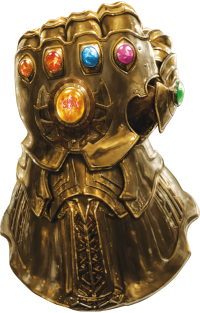

Aqui esta a Manopla do Infinito
Luffy e seu chapeu de palha
bom dia senhores tudo bem com vocês?Itálico não semântico
itálico semantico
querem um cafézinho?vai dormir
vai dormir tomar banho da direita para a esquerdaEntrar na segunda página sobre links
entrar na terceira página
® £ €
Tomar banho
Tomar café